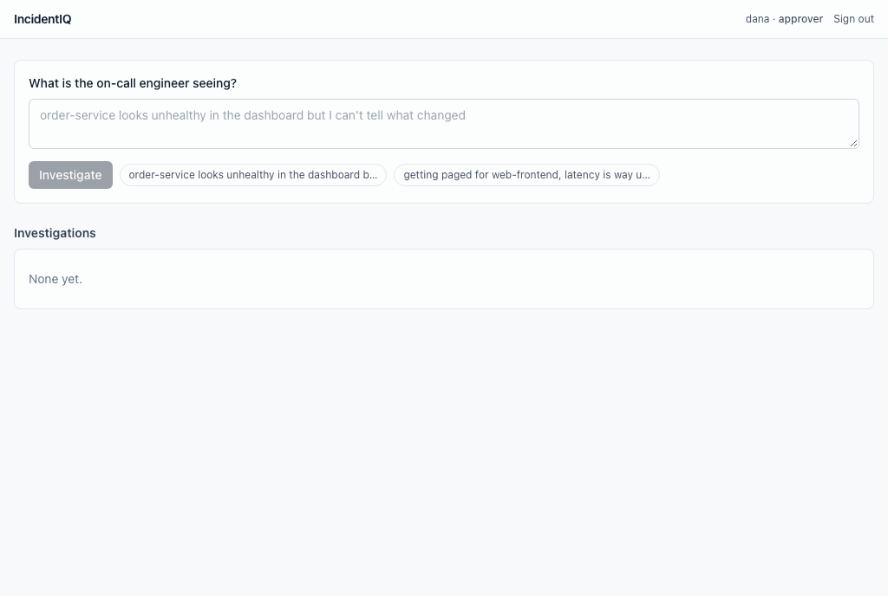
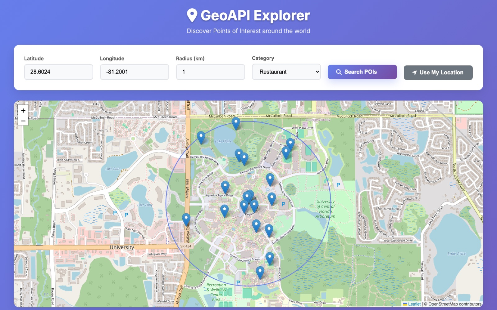

Before Rokt, I worked on RAG and LLM evaluation for research at the University of Central Florida, and on banking and healthcare backends at Infosys. Outside work I build projects end to end, like IncidentIQ, an incident-response agent that waits for a person's approval before it changes anything.
01Impact
Before and after, from production work
-
p95 latency, real-time decisioning APIs
Rokt (mParticle) · Redis caching and parallel asyncio retrieval
185 ms→132 ms−29%
-
Time to detect production issues
Rokt (mParticle) · OpenTelemetry tracing, Prometheus metrics, alerting
20 min→8 min
-
Grounded LLM answers
UCF · retrieval, chunking and prompts tuned on a 300+ question eval set
79%→92%
-
Weekly reconciliation incidents
Infosys · Kafka integrations across 5 systems, idempotent consumers, dead-letter queues
25→6
Before After
incidentiq · investigation

A real run on a local 14B model, sped up. It stops at the approval panel.
Agentic AI · Backend · Full-stack
An incident-response agent for on-call engineers. It reads logs, metrics and past incidents, finds the likely cause, and proposes a fix. Nothing that changes production runs until a person approves it.
How an investigation runs
- Report
- Retrieve
- Plan
- Run tools
- Reflect
- Propose
- Human approval
- Act once
- Survives crashes. LangGraph state is checkpointed after every step, so an investigation resumes where it stopped.
- Gated in code, not in the prompt. Write tools need an approval row, and an approved action runs exactly once through idempotency keys.
- Observable and pluggable. OpenTelemetry traces in Jaeger or Langfuse, Prometheus metrics, and an MCP server for the read-only tools.
- Recall@5 (capped), hybrid retrieval
- 0.80
- Task completion · target 90%
- 70%
- Abstention accuracy
- 100%
- Backend tests, CI on every push
- 695
localhost:8000 · map UI

Backend · Geospatial
A REST API and map UI for finding points of interest within a radius, filtered by category and rating, with the distance to each result.
How a radius query runs
- lat · lng · radius
- ST_DWithin on geography
- GIST index
- Results + distance
- Index-backed radius search on a PostGIS geography column, so distances are in meters and the spatial index is used.
- Benchmarked with wrk under Gunicorn on 100,000 POIs, with random query centers so the cache can't hide the database.
- POIs in the benchmark
- 100k
- Median, cached · 2,547 req/s
- 1.7 ms
- Median, uncached 5 km query
- 222 ms
More projects
03Experience
Customer data, research tooling, banking and healthcare
-
Sep 2025 — Aug 2026USA
Software Engineer · Rokt (mParticle)
Real-time decisioning APIs, identity tooling and production reliability on a customer-data platform.
- Cut p95 latency of real-time decisioning APIs by 29% (185 → 132 ms) with Redis caching and parallel asyncio retrieval under production load.
- Owned 0→1 a React/TypeScript identity-tracing tool for the mParticle CDP (React Query over C#/.NET APIs, visualizing profile merges): investigations about 30% faster.
- Built identity-resolved and predictive customer attributes with C#/.NET APIs and event-driven pipelines that enforce GDPR consent and CCPA opt-outs: eligible customer signals +23%.
- Added OpenTelemetry tracing, Prometheus metrics and Chronosphere alerting, and joined the on-call rotation: detection 20 → 8 min, resolution 60 → 25 min.
- Built Python LLM evaluation and guardrail workflows with structured outputs for ACE, Rokt's generative ad-content engine: rejected generations 12.4% → 4.8%.
-
Jun 2025 — Sep 2025Orlando, FL
AI Research Engineer · University of Central Florida
RAG and LLM evaluation for graph-analytics research, and the Chartalist.org rebuild.
- Built a 300+ question evaluation set to tune retrieval, chunking and prompts: grounded answers 79% → 92%.
- Added schema validation, retries and human review: 98%+ valid responses, 35% fewer manual corrections.
- Built a Python/FastAPI RAG search service over PostgreSQL/pgvector for research papers and code: lookups ~20 min → under 5.
- Led the Chartalist.org rebuild from legacy PHP to Next.js/TypeScript and Node.js: 92/100 desktop Lighthouse performance.
-
Jun 2021 — Jul 2023Remote
Software Engineer · Infosys
Banking and healthcare-payer backends: transactions, member enrollment and Kafka integrations.
- Built fault-tolerant Kafka integrations across 5 enterprise systems (idempotent consumers, retries, dead-letter queues): weekly reconciliation incidents 25 → 6.
- Built ASP.NET Core banking APIs with SQL Server and Dapper, with validation and business rules for 5,000+ daily transactions.
- Tracked down slow member-enrollment queries and tuned indexes and Oracle PL/SQL stored procedures: API ~25% faster.
- Wrote unit, integration and API tests for eligibility workflows: regression defects −18%, validation 2 days → under 1.
Full résumé (PDF) ↗
04Open source & writing
Contributions and notes
Pull requests
Writing
05Skills
Grouped by the job each tool does
- Languages
- Python · C# · TypeScript · JavaScript · SQL · Java · Bash
- Backend & APIs
- FastAPI · ASP.NET Core · Django REST Framework · Node.js · REST / OpenAPI · OAuth 2.0 · JWT
- Data & messaging
- PostgreSQL (pgvector, PostGIS) · SQL Server · Oracle PL/SQL · Redis · Kafka · event-driven design
- Applied AI
- RAG · embeddings · tool calling · AI agents · LangGraph · LangChain · MCP · LLM evaluation & guardrails
- Frontend
- React · Next.js · React Query · Tailwind CSS · HTML/CSS · frontend performance
- Cloud & delivery
- AWS (Lambda, S3, RDS, ECS, SQS) · Docker · Kubernetes · Terraform · GitHub Actions
- Observability
- OpenTelemetry · Prometheus · Grafana · Chronosphere · on-call and production debugging
- Testing
- pytest · Jest · Playwright · unit, integration and API tests in CI
06Education
Degrees and certifications
- 2025
M.S. Computer Science · GPA 3.9
University of Central Florida
- 2020
B.E. Computer Science
Savitribai Phule Pune University
- AWS
Certified Solutions Architect – Associate
Amazon Web Services
- AWS
Certified Cloud Practitioner
Amazon Web Services